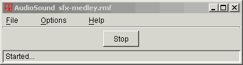

Welcome to the UltraKiss Media Player documentation. To open an online book, choose a book from the Contents page in the upper left of the Help Viewer. Click the book icon to expand the book topics. Then, click a topic to view it.
The Media Player is a full featured audio and visual playback program designed to reproduce media files contained within KiSS data sets. This online Help document provides reference material for the various commands and options available within the Media Player program.
The Media Player is an independent application that is designed for playback of background music during your UltraKiss session. You start the Media Player with the UltraKiss Tools-Media Player command. This will open the main Media Player screen. You use menu commands to load audio files or movie files or playlist files as required.
A playlist is a text document that lists media file names that are to be played in sequence. The Media Player will load a playlist file with a LST file extension and play each file. The Media Player provides menu commands to queue or delete entries from the playlist and to save playlists as required.
The Media Player can be integrated within your KiSS data set. The mediaplayer() FKiSS action command will start the Media Player application and initiate playback of the specified media file or playlist. Media Players started in this way are associated with the active KiSS data set and will be terminated when the data set is closed.
The Media Player uses Java Media Framework (JMF) to play media files. Kisekae UltraKiss can be used with any version of JMF. Note that cross-platform version of JMF only supports the following audio sample rates: 8, 11.025, 11.127, 16, 22.05, 22.254, 32, 44.1, and 48 KHz.
Figure 1 shows the main Media Player screen displayed when the Media Player is first launched. The menu bar at the top of the screen provides commands to adjust the Media Player options and to control the Media Player. For further information on playback options see the Media Player menu commands document.
Figure 1.
A status message is displayed at the bottom of the Media Player window. A player is initializing when the media file is being loaded. The player is realizing when the media data is being read into internal memory. The player is prefetched if it has been read into memory but is not active. The player is started when it is actively playing content.
If an audio file is loaded the Media Player will display an active audio control screen as shown in Figure 2a or Figure 2b. The window title will show the name of the active audio file. A control slider will be shown for audio files being processed with Java Media Framework. This control can be used to position the audio file as required.

Figure 2a.
Figure 2b shows the Media Player screen for a file being processed with Java Sound. Playback position cannot be controlled, however the playback can be started or stopped as required.

Figure 2b.
Figure 3 shows the Media Player as it plays a movie file. The Media Player is sized to fit the movie. A control slider can be used to position the movie as required.

Figure 3.
If a playlist is loaded the Media Player will show, in a scrollable list, all media files queued for playback. Figure 4 is an example of a playlist. The highlighted list entry shows the currently active media file. Any entry in the playlist can be selected for playback by clicking on the line item. The playlist can be edited by inserting new entries with the Insert key or the File-Queue command, or deleted using the Delete key or the File-Delete command.
Playlists are useful for playback of a collection of audio files. A movie file or mixed file collection is possible, too. If movie files are active the Media Player will show the movie and the playlist will not be seen until the movie ends.

Figure 4.
Next Document: Menu Commands
Copyright (c) 2002-2023 William Miles